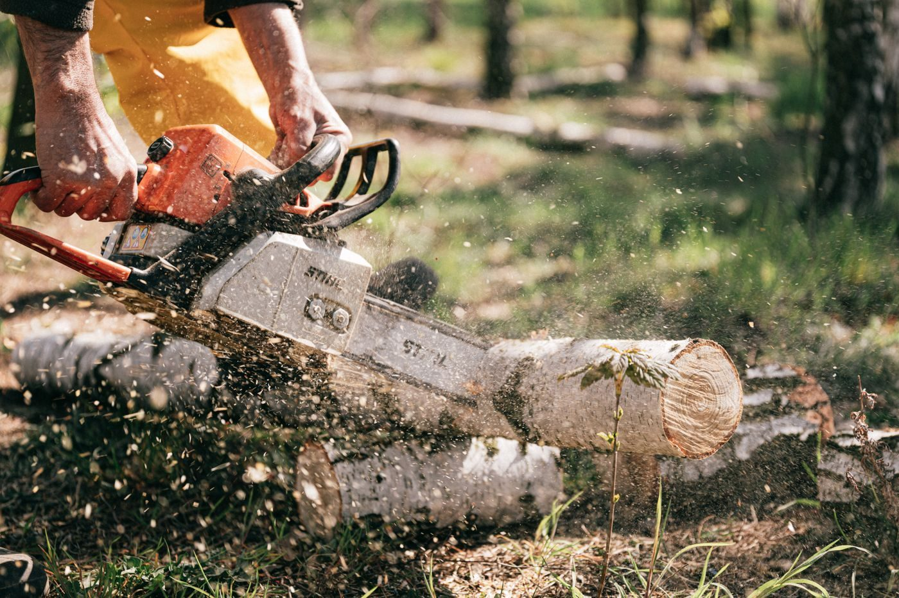
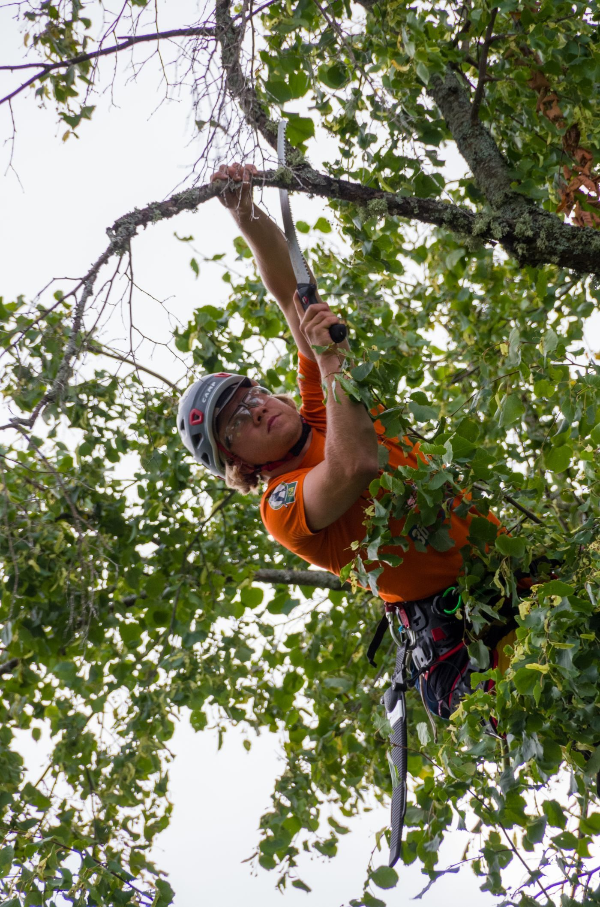

Tree work


Des Moines, Iowa
A family-owned tree service in Des Moines since 1972, per its Expertise listing, offering tree cutting, trimming, removal, stump grinding, storm cleanup, lot clearing, crane services, brush clearing, and firewood, with free estimates noted on its site.

John's Tree Service is a family-owned tree service in Des Moines since 1972, per its Expertise listing. It serves the Des Moines area with tree cutting, trimming, removal, stump grinding, storm cleanup, lot clearing, crane services, brush clearing, and firewood. Free estimates are noted on its site, and its BBB profile at the same address and phone carries an A+ rating.

727 SE 28th St, Des Moines, IA 50317
Monday to Friday 8:00 AM to 2:00 PM